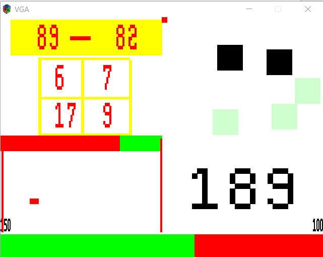
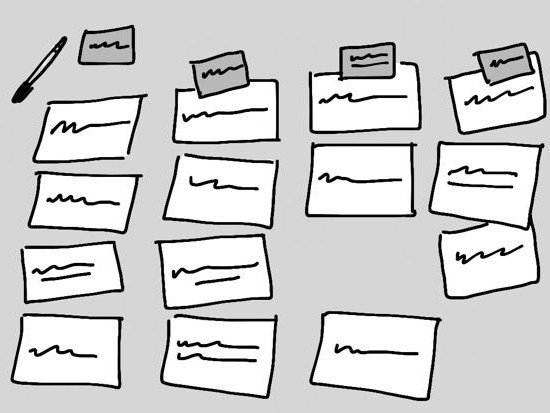

Hi. My name is Robert Aung and welcome to my portfolio.
Select what you would like to view.
I am a junior year student at University of Michigan majoring in Computer Science and minoring in Mathematics. I have a wide range of interests, from Machine Learning and Data Simulation to Computer Hardware and Architecture. Among my interests, I am especially passionate about building software, as evident from the software projects I have completed both in and outside of schoolwork and learning new technologies, frameworks and data structures to integrate into what I build. This summer I interned at an AdTech company Criteo where I was part of the team developing Criteo mobile SDK that can be used by app publishers to integrate Criteo ads on their apps. Through the internship, I learned iOS development in depth - from swizzling method implementations, utilizing libraries like UIKit and Notification Center to writing high-coverage tests using OCMock. Above all, I learned to work as part of a team by participating in Agile workflow creating and taking on JIRA tickets, discussing implementation details and code design, and doing code reviews. In addition to industry experience, I have also gathered a great amount of research experience by researching on distributed manufacturing systems under the supervision of Professor Kira Barton. Lastly, I am also enthusiastic about entrepreneurship and making a positive social impact, as seen from my contributions in a non-profit starting organization Bridge Burma and a student organization Optimize that promotes entrepreneurship on campus.
Request my RESUME
Using Altera DE2-115 board, my friends and I together built a microprocessor-based toy, as part of our Engineering course assignment. Programming of the I/O modules is done using Verilog and ASE100 assembly language.
Using machine learning and natural language processing techniques, I built an intelligent program in C++ that is able to identify the subject of a post on a question asking forum website - Piazza.
The program is first trained by feeding data into it, which is then stored using the Map data structure. The Map data structure is implemented manually as a Binary Search Tree, not just directly used from the C++ library. After training, the program predicts the most probable subject of a new post based on words used in the post, through efficient searching by recursion and probability calculation. This models the “Multi-Variate Bernoulli Naive Bayes Classifier".
During testing with large datasets, the program performed very well - predicting 2602 out of 2988 posts correctly
An object-oriented game program that allows the user to play a game of Euchre with computer-based opponents using a terminal-based interface.
Contributed to the front-end of Bridge Burma's website, using ReactJS framework with Bootstrap 4. Used responsive design techniques.
